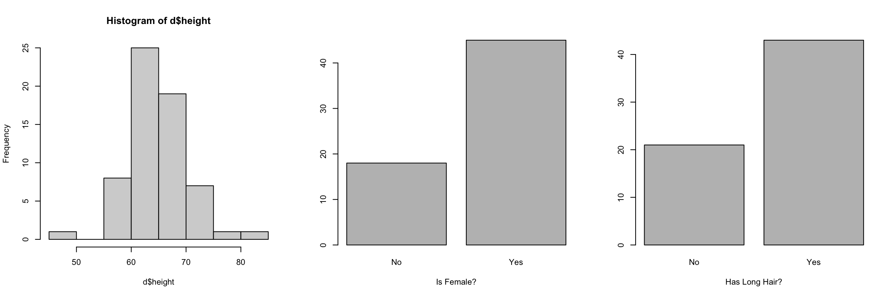
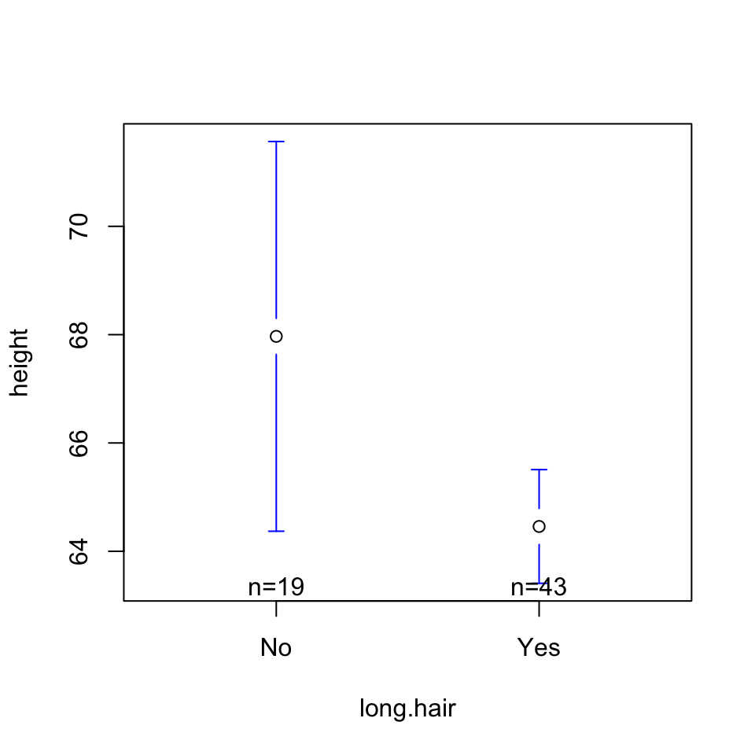
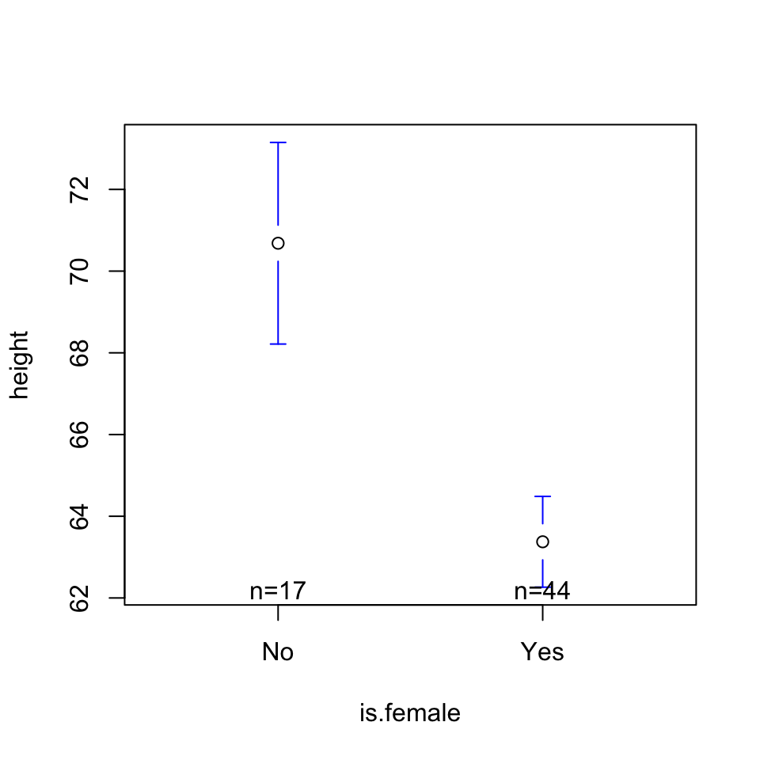
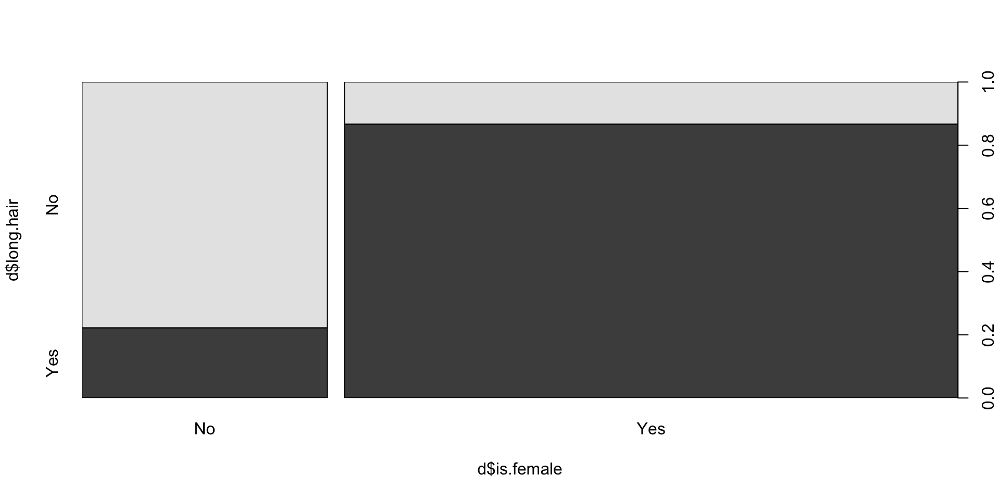
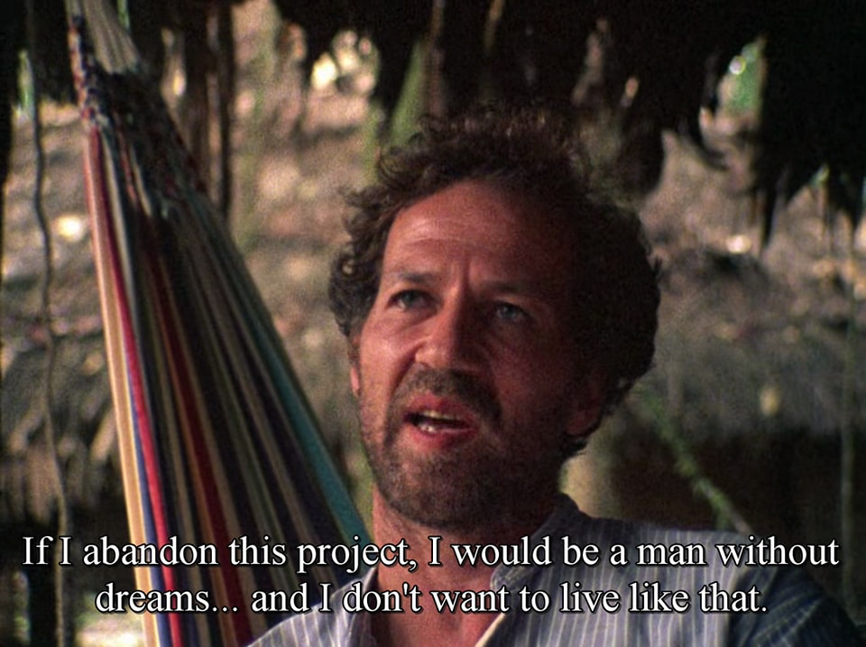

let’s keep it light mode : if you HAD to get a tattoo, what would you get? where would you get it? would it face toward you or other people?
bring on the heavy mode : if you could change one thing about your childhood, what would you change?
MODELS : What Do You Observe in Model 1? Model 2? Model 3?
Other Questions That You, the Students, Have?
## Data Cleaninglibrary(gplots)d <-read.csv("~/Dropbox/!WHY STATS/Class Datasets/214 - Class Datasets/Mini Data/mini_DATA.csv", stringsAsFactors = T)d$height[d$height <10| d$height >100] <-NAlevels(d$is.female)[1] <-NA#levels(d$long.hair)[1] <- NApar(mfrow =c(1,3))hist(d$height)plot(d$is.female, xlab ="Is Female?")plot(d$long.hair, xlab ="Has Long Hair?")

Call:
lm(formula = height ~ long.hair, data = d)
Residuals:
Min 1Q Median 3Q Max
-18.9684 -2.4581 0.4867 2.5419 16.0316
Coefficients:
Estimate Std. Error t value Pr(>|t|)
(Intercept) 67.968 1.144 59.420 <2e-16 ***
long.hairYes -3.510 1.374 -2.556 0.0131 *
---
Signif. codes: 0 '***' 0.001 '**' 0.01 '*' 0.05 '.' 0.1 ' ' 1
Residual standard error: 4.986 on 60 degrees of freedom
(2 observations deleted due to missingness)
Multiple R-squared: 0.09817, Adjusted R-squared: 0.08314
F-statistic: 6.531 on 1 and 60 DF, p-value: 0.01315

Call:
lm(formula = height ~ is.female, data = d)
Residuals:
Min 1Q Median 3Q Max
-14.375 -1.682 -0.375 2.125 13.318
Coefficients:
Estimate Std. Error t value Pr(>|t|)
(Intercept) 70.6824 0.9694 72.914 < 2e-16 ***
is.femaleYes -7.3074 1.1414 -6.402 2.76e-08 ***
---
Signif. codes: 0 '***' 0.001 '**' 0.01 '*' 0.05 '.' 0.1 ' ' 1
Residual standard error: 3.997 on 59 degrees of freedom
(3 observations deleted due to missingness)
Multiple R-squared: 0.4099, Adjusted R-squared: 0.3999
F-statistic: 40.99 on 1 and 59 DF, p-value: 2.757e-08

Call:
lm(formula = height ~ long.hair + is.female, data = d)
Residuals:
Min 1Q Median 3Q Max
-12.3225 -1.6381 -0.1375 1.8625 13.8625
Coefficients:
Estimate Std. Error t value Pr(>|t|)
(Intercept) 70.137 1.015 69.102 < 2e-16 ***
long.hairYes 2.316 1.441 1.607 0.114
is.femaleYes -8.815 1.466 -6.013 1.3e-07 ***
---
Signif. codes: 0 '***' 0.001 '**' 0.01 '*' 0.05 '.' 0.1 ' ' 1
Residual standard error: 3.944 on 58 degrees of freedom
(3 observations deleted due to missingness)
Multiple R-squared: 0.4351, Adjusted R-squared: 0.4156
F-statistic: 22.33 on 2 and 58 DF, p-value: 6.426e-08

Multiple Regression : Visualized in Multi-Dimensional Space!
The code below may not work on your computer; see lecture recording for an interpretation / explanation!
NOTE : I used AI (Gemini) to generate the code for this graph! Here was my prompt : “make an interactive 3d plot in R from the dataset d using the numeric outcome variable named height and two categorical predictor variables named long.hair and is.female. Generate a plane from the linear model to fill this 3D plot.”
d <-read.csv("~/Dropbox/!WHY STATS/Class Datasets/214 - Class Datasets/Mini Data/mini_DATA.csv", stringsAsFactors = T)library(plotly) # you will need to install this.d$height[d$height <10| d$height >100] <-NAlevels(d$is.female)[1] <-NA#levels(d$long.hair)[1] <- NA# PROF used AI (gemini) to generate this code.##### I used to use the function scatter3d from the "car" library ##### ....but it stopped working.# Create the interactive 3D scatter plotmodel <-lm(height ~ long.hair + is.female, data = d)plot_ly(data = d, x =~long.hair, y =~is.female, z =~height, type ="scatter3d", mode ="markers",marker =list(size =5, opacity =0.8)) %>%layout(scene =list(xaxis =list(title ='Hair Length'),yaxis =list(title ='Is Female'),zaxis =list(title ='Height')))hair_levels <-levels(d$long.hair)levels(hair_levels)gender_levels <-levels(d$is.female)# Create a grid for all combinationsgrid <-expand.grid(long.hair = hair_levels, is.female = gender_levels)# 3. Predict height across the grid and format as a matrixz_matrix <-matrix(predict(model, newdata = grid), nrow =length(hair_levels), ncol =length(gender_levels))# 4. Create the plotplot_ly(d, x =~long.hair, y =~is.female, z =~height) %>%add_markers(marker =list(size =3, opacity =0.6)) %>%add_surface(x = hair_levels, y = gender_levels, z =t(z_matrix), # Transpose to align with axesopacity =0.7, showscale =FALSE) %>%layout(scene =list(xaxis =list(title ='Hair Length'),yaxis =list(title ='Is Female'),zaxis =list(title ='Height')))
Reporting Effects in a Regression Table.
Table 1. Unstandardized Regression Coefficients; Predicting Height from Long.Hair and Is.Female.
Table 1. Unstandardized Regression Coefficients; Predicting Height from Long.Hair and Is.Female.
Model 1
Model 2
Model 3
Long Hair (0 = No, 1 = Yes)
-3.51 *
2.32
(1.37)
(1.44)
Is Female (0 = No, 1 = Yes)
-7.31 ***
-8.81 ***
(1.14)
(1.47)
N
62
61
61
R2
0.10
0.41
0.44
*** p < 0.001; ** p < 0.01; * p < 0.05.
install.packages("jtools") # a new package!!!library(jtools) # make sure you installed the new package first.export_summs(moda, modb, modc,coefs =c("Long Hair (0 = No, 1 = Yes)"="long.hairYes","Is Female (0 = No, 1 = Yes)"="is.femaleYes"))
Optional : Chapter 12 (on Interaction Effects)
Key Idea : the effect of the IV on the DV depends on another IV.
Final Project Workshop

Reviewing the Template
Reviewing Regression Tables —> Writing Your Results